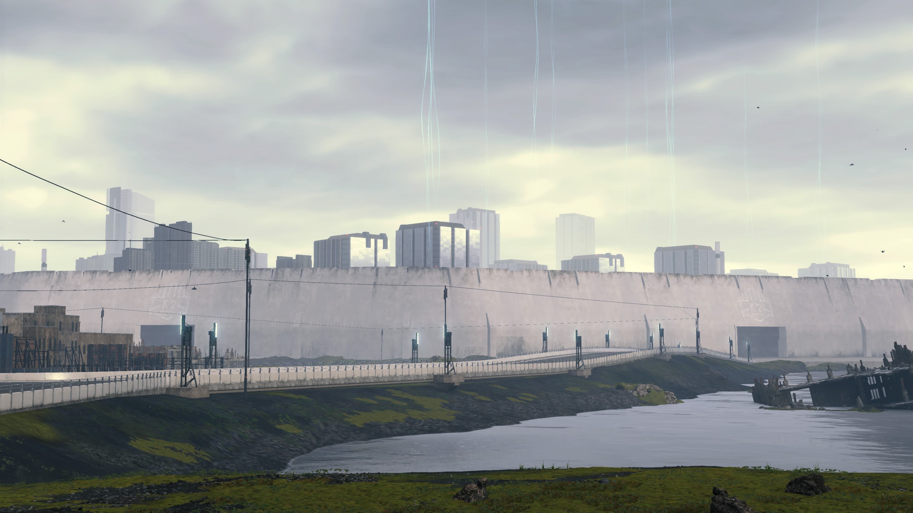
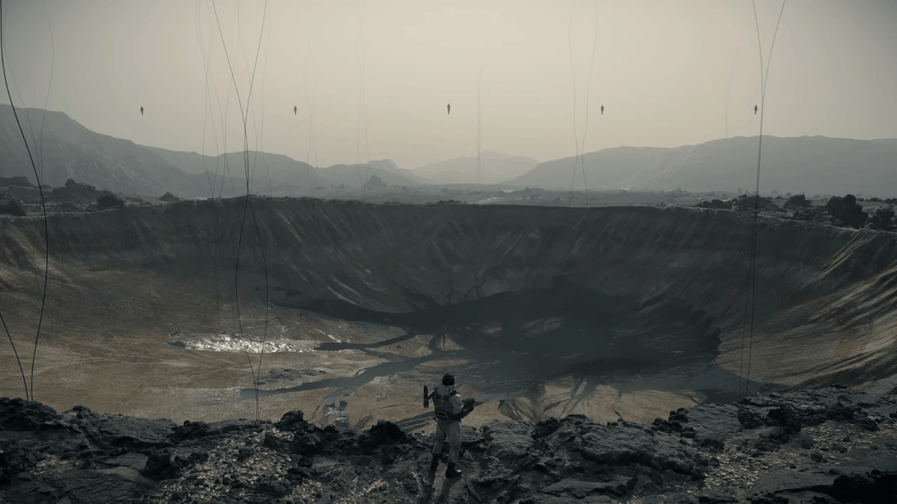
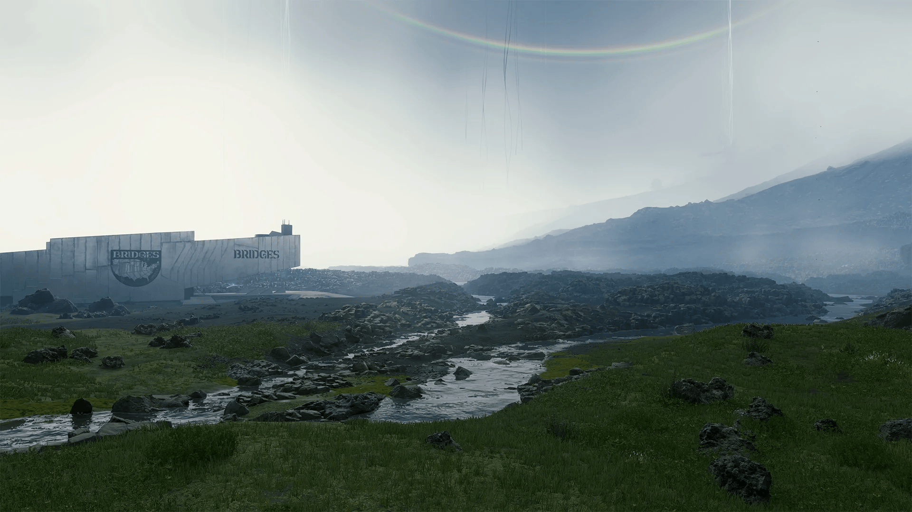
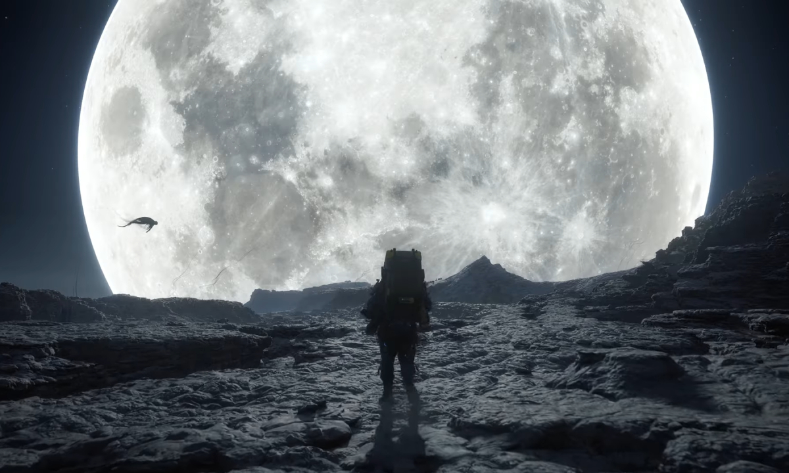
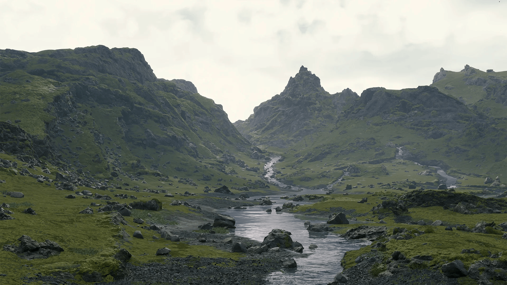
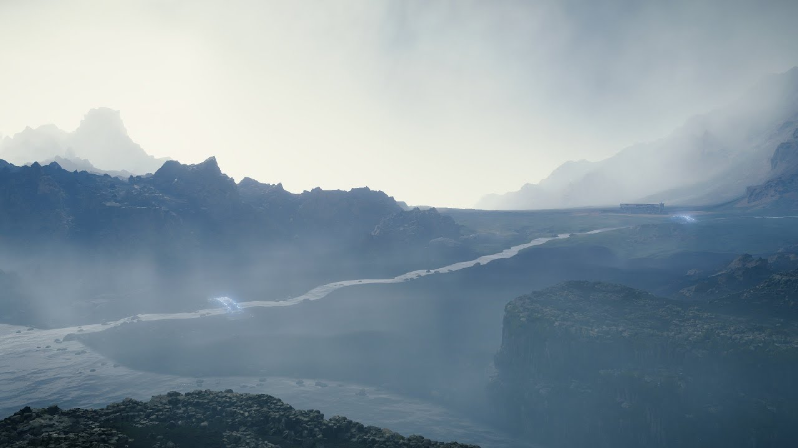

UCA Gallery

Our cities are state of the art and are fully protected by 5 stories tall reinforced concrete walls.

Aerial view of one of our protected areas, showing the vast landscape of the UCA.

One of our many distribution centers, strategically placed near natural landmarks for easy navigation.

At night in desert areas of the country you can see a fantastic view of the moon and some of the night time wildlife.

The great mountains of our country provide a great challenge for those who like rock climbing and exploration.

Our agricultural areas are carefully maintained to provide food for all UCA citizens.

The natural waterways of the UCA are essential for transportation and resource distribution.